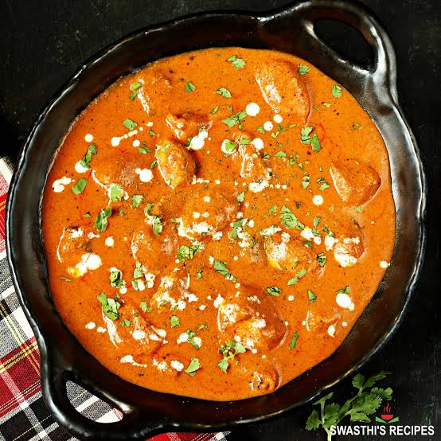
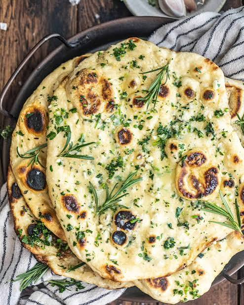

This is a delicious and creamy butter chicken served with buttery rosemary garlic naan!
Season chicken with salt.
In a skillet, allow olive oil and butter to warm over medium heat.
Add diced onions and shallots and cook for about 4-5 minutes.
Add garlic and ginger, stir constantly so that garlic doesn’t burn.
Add chicken to skillet and allow the chicken to brown.
Add seasonings and tomato paste cook for another 3 minutes.
Add heavy cream, lemon juice, pinch of sugar and stir until all ingredients come together.
Allow to simmer on low for about 20 minutes. Taste and add salt if needed.
Garnish with cilantro.
Serve hot with naan bread.
Calories: 680kcal, Carbohydrates: 11g, Protein: 23g, Fat: 62g,
Saturated Fat: 29g, Polyunsaturated Fat: 6g, Monounsaturated Fat: 22g,
Trans Fat: 0.4g, Cholesterol: 218mg, Sodium: 516mg, Potassium: 746mg,
Fiber: 2g, Sugar: 7g, Vitamin A: 2168IU, Vitamin C: 10mg, Calcium: 80mg, Iron: 2mg

Warm water slightly and add active dry yeast and sugar.
Gently whisk and allow the yeast to become foamy/bubbly, about 8-10 minutes.
In the bowl of a stand mixer with the dough hook attached,
combine yeast mixture, yogurt, milk, olive oil, salt, 4 cups of flour,
baking powder, and baking soda.
Mix until dough is combined, about 3-4 minutes.
The dough should be sticky but should form a ball.
If dough is sticking to the bottom of the bowl,
scrape down the sides of the bowl and add 2-4 tbsps of flour (the remaining 1/4 cup).
Conversely, if dough is a bit too dry, add an additional teaspoon of water.
Spray a large bowl with oil and add the dough.
Cover with plastic wrap and allow the dough to rise for about 1 1/2 hours,
until doubled in size.
Punch dough down and add to a well-floured work surface.
Cut dough into 10 equally sized pieces. Using a rolling pin,
roll each piece into a thin circle (the circles do not have to be perfect).
Heat large cast-iron skillet over high heat. Let the pan become very hot.
Sprinkle olive oil into the pan, add a piece of dough, and cover with a lid.
Cook for about 45 seconds to 1 minute on each side.
Repeat for all pieces, ensuring that you add olive oil to the pan prior
to adding the next piece of dough.
To make the rosemary garlic butter, melt butter in a medium-sized bowl.
Add herbs, a pinch of salt, and garlic, and stir together.
Generously brush each piece of naan with rosemary garlic butter.
Calories: 340kcal, Carbohydrates: 44g, Protein: 7g, Fat: 15g,
Saturated Fat: 7g, Polyunsaturated Fat: 1g, Monounsaturated Fat: 6g,
Trans Fat: 0.4g, Cholesterol: 28mg, Sodium: 589mg, Potassium: 120mg,
Fiber: 2g, Sugar: 3g, Vitamin A: 341IU, Vitamin C: 1mg, Calcium: 77mg, Iron: 3mg